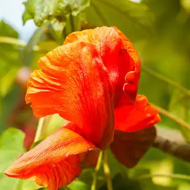

Registro
Quienes somos
Integrantes:
- Escalante Ávila Zaid Alberto
- Daniel Antoonie Olono Manrriquez
- Dereck Damian Bautista Gastelum
Conciencia y acción ambiental
La conciencia ambiental se refiere a la comprensión y sensibilidad hacia los problemas que afectan el medio ambiente. En la actualidad, la degradación del planeta, el cambio climático, la pérdida de biodiversidad y la contaminación son desafíos críticos que requieren la atención y acción de todos. Fomentar la conciencia ambiental es esencial para movilizar a las personas hacia prácticas sostenibles y responsables.
Reforestación interactiva con plantas endémicas
La reforestación interactiva es un método que busca restaurar ecosistemas dañados a través de la participación activa de la comunidad y el uso de tecnologías interactivas. Este enfoque no solo se centra en plantar árboles, sino también en educar a las personas sobre la importancia de las plantas endémicas y su conservación. Las plantas endémicas son aquellas que solo crecen en una región específica y son vitales para la biodiversidad local. Estas especies han evolucionado con su entorno y son esenciales para mantener el equilibrio ecológico.
Plantas Endémicas
Planta 1: Kokia Cookei
La Kokia Cookei es una especie endémica que se encuentra en Hawái. Esta planta es conocida por ser un árbol pequeño o arbusto que puede alcanzar hasta 3-4 metros de altura. Sus hojas son simples y de forma elíptica, con un color verde brillante. Las flores son grandes y de un color rojo vibrante. La conservación de esta especie es fundamental para preservar la diversidad biológica de Hawái.
Planta 2: Silphium perfoliatum

La Silphium perfoliatum es una especie endémica que se encuentra en el oeste de Estados Unidos. Esta planta se destaca por su uso en proyectos de restauración ecológica para recuperar praderas y áreas degradadas. Su presencia contribuye a la diversidad biológica y la salud del ecosistema. Su conservación es crucial, ya que ayuda en la restauración de ecosistemas de pradera y proporciona hábitat y alimento a diversas especies.